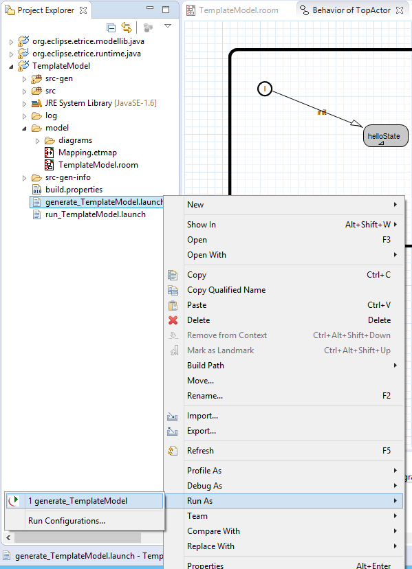

In this tutorial you will get a first look at a very simple eTrice model. The goal is to learn the work flow of eTrice and to understand a few basic features of ROOM.
Preconditions:
After installation of eTricein Eclipse, we can use the wizard to create the template.c project, which is good starting point for new ROOM applications. Select the menu File -> New -> Other (Ctrl+N) and choose eTrice C Template Project. To complete the wizard press Next and on the next page Finish.
This will add three projects into your workspace, the library projects runtime.c and modellib.c and our application project template.c. Now open the TemplateModel.room in the model folder of template.c.

The model contains an ActorClass TopActor, which is currently the only active actor. TopActor has a state machine that is intended to output a simple HelloWorld statement. To inspect its behavior graphically, we can open the behavior diagram by right click on Outline View -> TopActor -> Edit Behavior. Alternatively we can place the cursor within the textual notation and press Alt+B.

The state machine has an initial transition that leads to helloState. The state defines an entry code, which is executed during the transition. We can view the details by hovering over the state and edit the code with a double-click or right click and Edit State.
Now we are ready to translate the model into an executable application. The first step is to generate source files from the model. Therefore we run the eTrice model generator by right click on file
generate_Template.launch -> Run As -> generate_Template.
After that we can build and run the application by right click on file
run_Template_Windows.launch -> Run As -> run_Template_Windows
. This will trigger the build process, carried out by CDT Eclipse and then subsequently start our application.
|  |  |
| 1. Invoke generator | 2. Build and run application |
The output of our application is logged in the Console View and it shows the "Hello World". By typing "quit", as prompt, and pressing enter, the application terminates regularly.
After termination, we can inspect the behavior of our application. It is recorded in the form of a MSC (Message Sequence Chart) and can now be used for debugging or documentation purpose. Open msc.seq or subSystemRef_Async.seq in the folder log using the tool Trace2UML.
If Trace2UML (Open Source tool) is not already installed, it can be obtained here: Windows download site or Linux package of the Astade UML tool containing Trace2UML
Yet the MSC is nearly empty having not recorded any interaction between actors. It shows that topActor (full instance path /LogSys/subSystemRef/topActor) has taken helloState. In the next PingPong tutorial we are going to create a more sophisticated and vivid eTriceapplication introducing actor building blocks and message protocols.